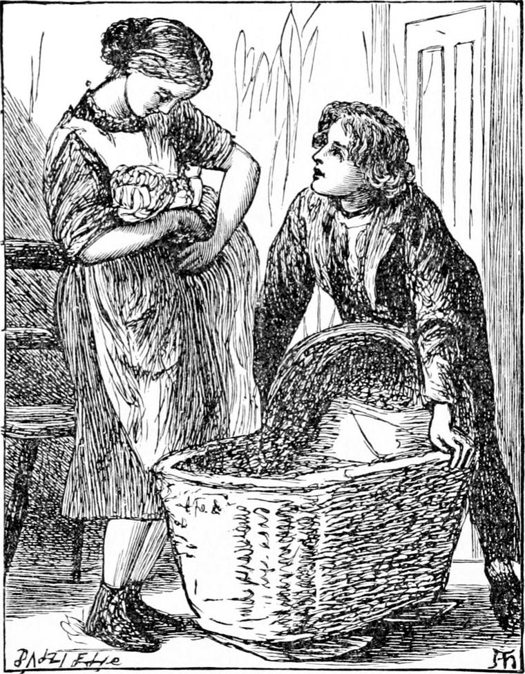
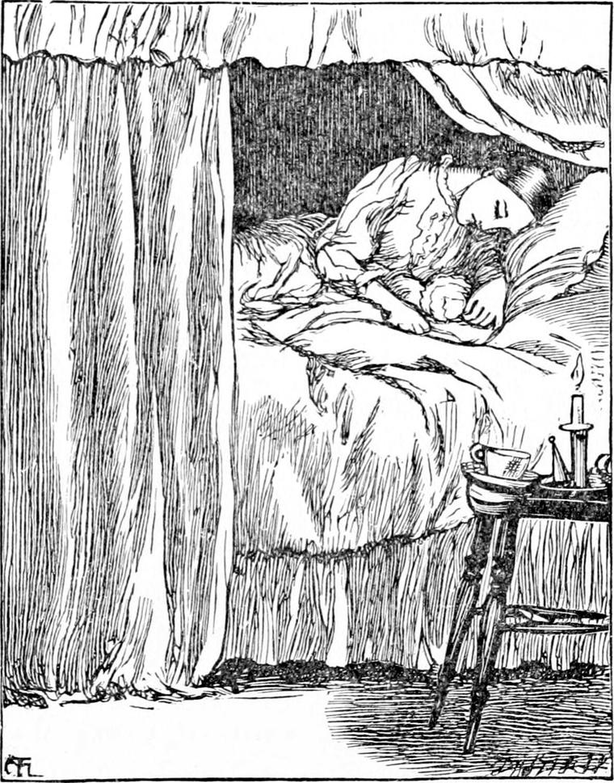

IT WAS a great delight to Diamond when at length Nanny was well enough to leave the hospital and go home to their house. She was not very strong yet, but Diamond's mother was very considerate of her, and took care that she should have nothing to do she was not quite fit for. If Nanny had been taken straight from the street, it is very probable she would not have been so pleasant in a decent household, or so easy to teach; but after the refining influences of her illness and the kind treatment she had had in the hospital, she moved about the house just like some rather sad pleasure haunting the mind. As she got better, and the colour came back to her cheeks, her step grew lighter and quicker, her smile shone out more readily, and it became certain that she would soon be a treasure of help. It was great fun to see Diamond teaching her how to hold the baby, and wash and dress him, and often they laughed together over her awkwardness. But she had not many such lessons before she was able to perform those duties quite as well as Diamond himself.
Things however did not go well with Joseph from the very arrival of Ruby. It almost seemed as if the red beast had brought ill luck with him. The fares were fewer, and the pay less. Ruby's services did indeed make the week's income at first a little beyond what it used to be, but then there were two more to feed. After the first month he fell lame, and for the whole of the next Joseph dared not attempt to work him. I cannot say that he never grumbled, for his own health was far from what it had been; but I can say that he tried to do his best. During all that month, they lived on very short commons indeed, seldom tasting meat except on Sundays, and poor old Diamond, who worked hardest of all, not even then—so that at the end of it he was as thin as a clothes-horse, while Ruby was as plump and sleek as a bishop's cob.

Nor was it much better after Ruby was able to work again, for it was a season of great depression in business, and that is very soon felt amongst the cabmen. City men look more after their shillings, and their wives and daughters have less to spend. It was besides a wet autumn, and bread rose greatly in price. When I add to this that Diamond's mother was but poorly, for a new baby was coming, you will see that these were not very jolly times for our friends in the mews.
Notwithstanding the depressing influences around him, Joseph was able to keep a little hope alive in his heart; and when he came home at night, would get Diamond to read to him, and would also make Nanny produce her book that he might see how she was getting on. For Diamond had taken her education in hand, and as she was a clever child, she was very soon able to put letters and words together.
Thus the three months passed away, but Mr. Raymond did not return. Joseph had been looking anxiously for him, chiefly with the desire of getting rid of Ruby—not that he was absolutely of no use to him, but that he was a constant weight upon his mind. Indeed, as far as provision went, he was rather worse off with Ruby and Nanny than he had been before, but on the other hand, Nanny was a great help in the house, and it was a comfort to him to think that when the new baby did come, Nanny would be with his wife.
Of God's gifts a baby is of the greatest; therefore it is no wonder that when this one came, she was as heartily welcomed by the little household as if she had brought plenty with her. Of course she made a great difference in the work to be done—far more difference than her size warranted, but Nanny was no end of help, and Diamond was as much of a sunbeam as ever, and began to sing to the new baby the first moment he got her in his arms. But he did not sing the same songs to her that he had sung to his brother, for, he said, she was a new baby and must have new songs; and besides, she was a sister-baby and not a brother-baby, and of course would not like the same kind of songs. Where the difference in his songs lay, however, I do not pretend to be able to point out. One thing I am sure of, that they not only had no small share in the education of the little girl, but helped the whole family a great deal more than they were aware.

How they managed to get through the long dreary expensive winter, I can hardly say. Sometimes things were better, sometimes worse. But at last the spring came, and the winter was over and gone, and that was much. Still, Mr. Raymond did not return, and although the mother would have been able to manage without Nanny now, they could not look for a place for her so long as they had Ruby; and they were not altogether sorry for this. One week at last was worse than they had yet had. They were almost without bread before it was over. But the sadder he saw his father and mother looking, the more Diamond set himself to sing to the two babies.
One thing which had increased their expenses was that they had been forced to hire another little room for Nanny. When the second baby came, Diamond gave up his room that Nanny might be at hand to help his mother, and went to hers, which, although a fine place to what she had been accustomed to, was not very nice in his eyes. He did not mind the change though, for was not his mother the more comfortable for it? And was not Nanny more comfortable too? And indeed was not Diamond himself more comfortable that other people were more comfortable? And if there was more comfort every way, the change was a happy one.